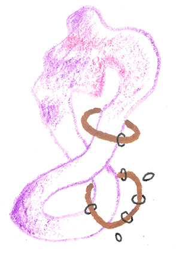
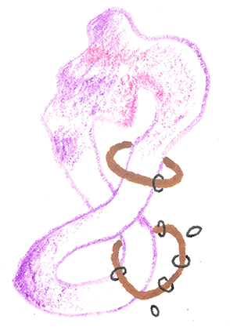

Life before the Agricultural Revolution
“The less work, the better” - Research finding on work patterns of hunter-gatherers
“Je weniger Arbeit, desto besser”
The Article’s Authenticity
The Süddeutsche Zeitung article from April 1, 2021, is not an April Fool’s joke but a legitimate article discussing James Suzman’s book “Sie nannten es Arbeit” (published in English as “Work: A History of How We Spend Our Time”) [1].
Hunter-Gatherer Work Hours
Research indicates that hunter-gatherers did work significantly less than modern humans:
- Anthropological studies suggest hunter-gatherers worked approximately 15-20 hours per week on direct food acquisition [2]
- When including all subsistence-related activities, total working time was about 30-40 hours per week [3]
- This is less than the average modern workweek when domestic chores and commuting are included
- The “Original Affluent Society” hypothesis by Marshall Sahlins suggests hunter-gatherers had considerable leisure time [2]
Hunter-Gatherer Lifespan
The evidence on hunter-gatherer lifespans is nuanced:
- If a hunter-gatherer survived childhood, they could often live to relatively old age
- The “modal adult life span” (most common age of death for adults) was 68-78 years [4]
- Overall life expectancy was much lower (21-37 years) primarily due to high infant and childhood mortality [5]
- Hunter-gatherers who reached adulthood had mortality patterns similar to pre-modern agricultural societies
- The transition to agriculture often initially worsened health and decreased lifespan due to:
- Increased disease transmission
- Less varied diets
- Harder physical labor [6]
Historical Significance
- For about 95% of human history (roughly 285,000 of 300,000 years), humans lived as hunter-gatherers
- The agricultural revolution created significant changes in human society, including:
- Increased workload
- More diseases and epidemics
- New social hierarchies
- Surplus production allowing population growth [7]
Contemporary Relevance
- Modern technology was expected to reduce working hours (John Maynard Keynes predicted 15-hour workweeks by now) [8]
- Instead, we work more despite unprecedented productivity
- COVID-19 pandemic has highlighted problems in our work culture and created opportunities to reconsider our relationship with work
- Suzman suggests alternatives like universal basic income and reducing work hours could benefit both humans and the planet [9]
References
[1] Amazon.de and other German book retailers listing Suzman’s book with citations from the Süddeutsche Zeitung article
[2] Original Affluent Society - Wikipedia, based on Marshall Sahlins’ research
[3] Various research papers on hunter-gatherer work patterns, including studies by Gurven and Kaplan
[4] “Longevity Among Hunter-Gatherers: A Cross-Cultural Examination” by Gurven and Kaplan (2007)
[5] “Hunter-gatherer” - Wikipedia, citing research on mortality rates
[6] “Human mortality improvement in evolutionary context” - Study published in PMC (PubMed Central)
[7] Research by David A. Nibert on animal domestication and human society transformation
[8] Keynes’ 1930 essay “Economic Possibilities for our Grandchildren” referenced in multiple sources
[9] Interviews with James Suzman about his book in The Guardian and other publications
~ •• • •• ~
Does something bubble up for you?
Pin your ideas or thoughts here üìå
Anyone can interact here. This is my little communication experiment.
I'd love to hear from you!
License for all original work:

 MMSLifeBeforeAgriculturalRevolution
MMSLifeBeforeAgriculturalRevolution